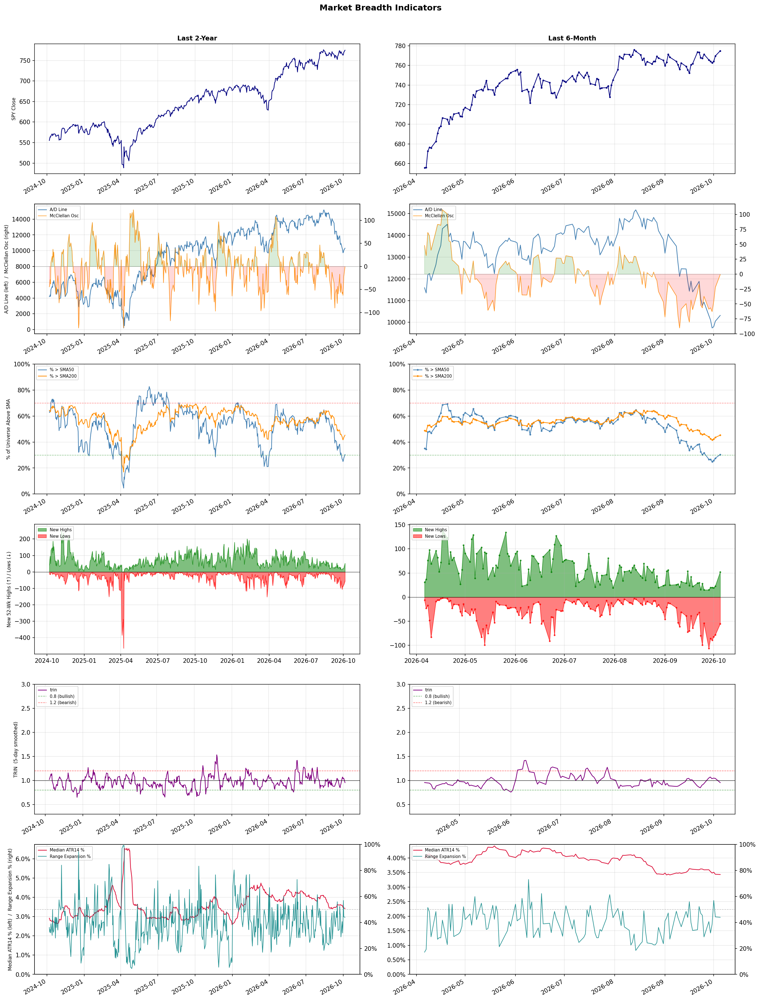

A daily market breadth and sector rotation report for active investors
| Item | Read |
|---|---|
| Regime | Defensive |
| Risk posture | Defensive |
| Universe | 1,319 stocks tracked · 52 new 52-week highs · 30 active swing setups |
| Breadth | only 30.4% of tracked stocks are above SMA50, new lows exceed new highs (55 vs 52), McClellan oscillator (breadth momentum) is negative at -0.8 |
| Leadership | Oil & Gas Refining & Marketing, Health Information Services, and Diagnostics & Research |
| Weakest groups | Resorts & Casinos, REIT - Mortgage, and Uranium |
Use this report to prioritize research and chart review; validate entries, stops, liquidity, earnings, and risk before acting.
| Item | Read |
|---|---|
| Primary read | Defensive regime with Defensive risk posture. |
| Research queue | PBF, MPC, VLO, DINO, CSAN |
| Leadership focus | Oil & Gas Refining & Marketing, Health Information Services, and Diagnostics & Research |
| Caution list | Resorts & Casinos, REIT - Mortgage, and Uranium |
| Review prompt | Check extension risk, chart location, fundamentals, valuation, and earnings before using any research row. |
| Item | Read |
|---|---|
| Primary read | 4 active risk warnings; use screen output as watchlist input only. |
| Bullish screens | MPC, TXG, ILMN, PBR, FLEX |
| Bearish screens | LULU, XRAY, SNY, IONS, PSEC |
| Alerts / levels | Automated trigger, stop, ATR, liquidity, reward/risk, and event-risk levels are pending future enrichment. |
| Review prompt | Open the linked chart, define trigger and invalidation, then check liquidity and event risk independently. |
Risk Posture: Defensive — screen backdrop favors caution; require independent risk review before new exposure
Metric context: McClellan below -50 = elevated selling pressure; below -100 = washout territory. Range Expansion = share of stocks with daily range above their 20-day average. Signal Density = share of tracked names appearing in signal screens.
| Breadth Date | % > SMA50 | % > SMA200 | New Highs | New Lows | McClellan | Median Range | Avg Range | Median ATR14 | Range Expansion | Signal Density |
|---|---|---|---|---|---|---|---|---|---|---|
| 2026-10-05 | 30.4% | 45.3% | 52 | 55 | -0.8 | 3.1% | 3.6% | 3.4% | 44.0% | 2.3% |

Prior comparison date: October 2, 2026
| Metric | Prior | Current | Change |
|---|---|---|---|
| Regime | Defensive | Defensive | unchanged |
| Risk Posture | Defensive | Defensive | unchanged |
| % > SMA50 | 27.6% | 30.4% | +2.8 pts |
| % > SMA200 | 43.6% | 45.3% | +1.7 pts |
| New Highs | 23 | 52 | +29 |
| New Lows | 78 | 55 | +23 |
Top-10 industries entering: Software - Infrastructure. Top-10 industries leaving: REIT - Hotel & Motel. New multi-signal long setups: AZTA, BBD, CRWD, DHT, FLEX, FRO, GTES, ILMN. New multi-signal short setups: CLVT, LULU.
| Status | Tickers | Read |
|---|---|---|
| Added | AZTA, BBD, CLVT, CRWD, DHT, FLEX, FRO, GTES | New technical screen matches vs prior report. |
| Removed | AMAT, AMD, APP, ARM, BB, BCE, BSX, CMCSA | No longer present in today's technical screen matches. |
| Still Active | AMPL, DT, IONS, JCI, LITE, P, XRAY | Appeared in both current and prior reports. |
| Promoted | none | Model Screen Score improved by at least 15 points. |
| Downgraded | none | Model Screen Score declined by at least 15 points. |
| Direction | Industry | ETF | Prior Rank | Current Rank | Days | Rank Change |
|---|---|---|---|---|---|---|
| Rose | Semiconductor Equipment & Materials | SOXX | 80 | 4 | 28 | +76 |
| Rose | Electronic Components | XLK | 81 | 6 | 28 | +75 |
| Rose | Semiconductors | SOXX | 73 | 8 | 42 | +65 |
| Rose | Communication Equipment | IYZ | 78 | 17 | 28 | +61 |
| Rose | Steel | SLX | 64 | 13 | 42 | +51 |
Bull: The Semiconductor Equipment & Materials sector is experiencing rising relative strength due to a robust demand for semiconductor manufacturing capabilities, as highlighted by multiple positive stock movements among key players like Lam Research, Applied Materials, and KLA Corp. This uptick is likely driven by increasing investments in chip production to meet the growing needs of various industries, including automotive and consumer electronics, as evidenced by articles discussing the best semiconductor stocks for 2026 and the overall sector-wide rally noted in Veeco Instruments' performance. Additionally, despite short-term volatility, as seen with Applied Materials' recent drop, the long-term outlook remains strong, suggesting a resilient market poised for growth.
Bear: While the semiconductor equipment sector may currently exhibit rising relative strength, this could be misleading given the cyclical nature of the industry and potential overcapacity issues. The recent stock movements, including the significant drop in Applied Materials' stock following Broadcom's announcement, highlight underlying vulnerabilities and market volatility that could undermine long-term growth prospects. Furthermore, the optimistic demand projections may not fully account for geopolitical tensions, supply chain disruptions, and the potential for a slowdown in consumer spending, which could dampen investment in semiconductor manufacturing.
Verdict: The semiconductor equipment and materials sector is experiencing upward momentum primarily due to strong demand driven by increased investments in chip production across various industries, such as automotive and consumer electronics. However, investors should remain cautious of potential risks, including cyclical market dynamics, overcapacity concerns, and external factors like geopolitical tensions and supply chain disruptions, which could hinder sustained growth.
Sources: Google News
Bull: The rising relative strength of the Electronic Components industry can be attributed to robust earnings performances from key players such as Amphenol and Benchmark, as highlighted in recent headlines. This positive momentum is further supported by promising industry trends that suggest increased demand for electronic components across various sectors, including manufacturing and power solutions, as indicated by articles from Eastern Progress and Yahoo Finance. The overall bullish sentiment in the sector is likely driven by the ongoing technological advancements and the growing reliance on electronics in both consumer and industrial applications.
Bear: While the rising relative strength in the Electronic Components industry may seem promising, it is essential to consider potential headwinds that could undermine this bullish sentiment. The sector is heavily reliant on cyclical demand, which can be adversely affected by macroeconomic factors such as inflation, supply chain disruptions, and geopolitical tensions. Furthermore, the focus on a few standout performers like Amphenol may mask underlying weaknesses in the broader industry, where many companies could struggle with margins due to rising input costs and increased competition, leading to a potential downturn in profitability.
Verdict: The Electronic Components industry is experiencing a rise in relative strength primarily due to strong earnings from key players like Amphenol and Benchmark, coupled with increasing demand driven by technological advancements across various sectors. However, investors should remain cautious of potential headwinds such as macroeconomic pressures, supply chain disruptions, and rising input costs, which could impact margins and profitability for many companies in the sector. It is advisable to closely monitor these risks while considering investments in this space.
Sources: Google News
Bull: The semiconductor industry is experiencing a bullish trend due to a combination of strong M&A activity, such as Broadcom's $60 billion chip deal, which signals confidence in future demand and consolidation within the sector. Additionally, ON Semiconductor's 5.3% jump and BofA's identification of top semiconductor stocks to buy after a recent selloff indicate a renewed investor interest, driven by optimism about the industry's growth potential and recovery from previous downturns. This momentum is further supported by a broader sector rally, as evidenced by the positive performance of key players like Taiwan Semiconductor and Macom, reinforcing the semiconductors' rising relative strength against other industries.
Bear: While the recent M&A activity and stock price increases may suggest a bullish sentiment, they can also indicate a speculative bubble fueled by short-term optimism rather than sustainable growth. The semiconductor industry faces significant headwinds, including supply chain vulnerabilities, geopolitical tensions affecting key players like Taiwan Semiconductor, and potential regulatory challenges that could stifle innovation and profitability. Additionally, the cyclical nature of the industry means that any current rally could be short-lived, as demand may not keep pace with the rapid expansion and investment seen in recent months.
Verdict: The semiconductor industry's bullish trend is primarily driven by strong M&A activity, indicating confidence in future demand and sector consolidation, alongside renewed investor interest following recent selloffs. However, key risks include supply chain vulnerabilities and geopolitical tensions, particularly concerning Taiwan Semiconductor, which could undermine long-term growth and profitability. Investors should remain cautious and monitor these external factors while considering strategic positions in leading semiconductor stocks.
Sources: Google News
Bull: The Communication Equipment sector is experiencing a rising relative strength primarily due to the ongoing advancements and investments in 5G technology, as highlighted in the "12 Best 5G Stocks for 2026" article, which signals strong future growth potential. Additionally, the sector's resilience is underscored by Viasat's recent 7.6% jump amid a broader sector rally, suggesting that key players are capitalizing on emerging opportunities despite challenges faced by the optical communication industry. This combination of technological innovation and positive market sentiment positions the Communication Equipment sector favorably against others.
Bear: While advancements in 5G technology may suggest growth potential, the recent headline regarding a collective market crash in the global optical communication industry raises significant concerns about the sustainability of this sector's rally. Moreover, the performance dispersion between hardware and software indicates that underlying issues may persist, potentially leading to volatility and underperformance for communication equipment stocks in the face of broader economic challenges and market corrections. Thus, the current optimism may be overly optimistic and not reflective of the sector's fundamental weaknesses.
Verdict: The Communication Equipment sector's rise is fundamentally driven by robust investments and advancements in 5G technology, which are expected to fuel long-term growth and innovation. However, a key risk lies in the recent turmoil within the optical communication industry, which could indicate underlying vulnerabilities that may lead to market volatility and affect the sustainability of the sector's current rally. Investors should remain cautious and monitor the performance of both hardware and software segments closely to assess potential impacts on overall market sentiment.
Sources: Google News
Bull: The steel industry is experiencing a resurgence in relative strength, driven by a combination of improving demand and stabilization in stock performance, as highlighted by the recent uptick in Cleveland-Cliffs and other major players like Nucor and Steel Dynamics. Additionally, with increasing focus on infrastructure development and construction projects, as well as a growing emphasis on electric vehicle production, steel producers are well-positioned to benefit from these macroeconomic trends, as indicated by the positive outlook in articles discussing the best steel stocks to watch and invest in for 2026.
Bear: While the steel industry may show rising relative strength and some positive stock performance, this could be misleading given the cyclical nature of the sector and potential headwinds such as rising raw material costs, supply chain disruptions, and increasing competition from alternative materials like aluminum and composites. Additionally, the anticipated demand from infrastructure projects and electric vehicle production may not materialize as quickly as expected, especially if economic conditions weaken or if government policies shift, ultimately putting pressure on steel prices and margins.
Verdict: The steel industry's recent resurgence is fundamentally driven by improving demand from infrastructure development and electric vehicle production, alongside stabilization in stock performance from key players like Cleveland-Cliffs and Nucor. However, investors should remain cautious of potential risks, including rising raw material costs and the cyclical nature of the sector, which could dampen profitability if anticipated demand does not materialize as projected.
Sources: Google News
| Direction | Industry | ETF | Prior Rank | Current Rank | Days | Rank Change |
|---|---|---|---|---|---|---|
| Fell | Agricultural Inputs | N/A | 5 | 84 | 28 | -79 |
| Fell | Uranium | URA | 21 | 85 | 28 | -64 |
| Fell | Packaging & Containers | N/A | 31 | 81 | 35 | -50 |
| Fell | REIT - Mortgage | N/A | 43 | 86 | 35 | -43 |
| Fell | Real Estate Services | N/A | 37 | 79 | 42 | -42 |
Bear: While the bull analyst attributes the decline in the Agricultural Inputs sector to supply shocks and a broader market shift, it's crucial to recognize that these issues are symptomatic of deeper, structural challenges facing the industry. The substantial drop in Corteva's stock price, alongside the volatility in companies like Intrepid Potash, indicates a loss of investor confidence not just in supply stability, but also in the long-term profitability of agricultural inputs as commodity prices remain under pressure and sustainability concerns grow. Furthermore, the trend of reallocating capital towards economically sensitive materials could signal a broader shift away from agricultural inputs, which may struggle to regain traction in a market increasingly focused on innovation and efficiency in other sectors.
Bull: The Agricultural Inputs sector is likely experiencing a decline in relative strength due to heightened concerns over fertilizer and energy supply shocks, as highlighted in the Simply Wall Street article, which has led to significant volatility and sell-offs in key stocks like Corteva. Additionally, the broader market's focus on economically sensitive materials, as noted in Seeking Alpha, suggests that investors may be reallocating capital towards sectors perceived to have stronger growth potential, further pressuring agricultural input stocks.
Verdict: The decline in the Agricultural Inputs sector is primarily driven by heightened volatility and supply concerns, particularly around fertilizer and energy, which have eroded investor confidence in long-term profitability. The key risk highlighted by the bear thesis is the potential for sustained pressure on commodity prices and a broader market shift away from agricultural inputs towards more innovative and efficient sectors, suggesting that investors should closely monitor these dynamics before committing capital. To navigate this landscape, a cautious approach is advisable, focusing on companies that demonstrate resilience and adaptability in response to evolving market conditions.
Sources: Google News
Bear: While the bull analyst points to ongoing interest in nuclear energy as a positive sign for the uranium sector, the recent headlines reveal significant underlying issues, such as the stark divide between profitable producers and struggling developers, which raises concerns about the overall health of the industry. Furthermore, the rise in NuScale Power shares, despite dilution, may indicate a lack of confidence in traditional uranium investments, as investors seek alternative avenues within the energy sector, thereby questioning the sustainability of the current bullish sentiment. This suggests that the recent decline in relative strength may not be a temporary correction, but rather a signal of deeper structural challenges facing the uranium market.
Bull: The recent decline in the relative strength of the uranium sector can be attributed to a sector correction that has highlighted the disparity between profitable uranium producers and loss-making developers, as noted in the ChartMill headline. Additionally, the rise of NuScale Power shares, despite dilution, suggests investor caution around financing and valuation concerns within the industry, which may be impacting overall sentiment. However, the ongoing interest in nuclear energy, as indicated by multiple headlines discussing the long-term bullish outlook and potential investment opportunities, suggests that this weakness may be temporary and driven by short-term market dynamics rather than fundamental deterioration in the uranium market itself.
Verdict: The recent decline in the uranium sector appears to be driven by a correction that has exposed the financial disparities between profitable producers and struggling developers, raising concerns about the industry's overall health. The key risk highlighted by the bear case is that the rise of alternative energy investments, such as NuScale Power, may indicate a shift in investor confidence away from traditional uranium stocks, suggesting that the current bullish sentiment could be unsustainable. Investors should closely monitor the financial performance of uranium producers and the broader market sentiment towards nuclear energy to gauge the potential for recovery.
Sources: Google News
Bear: While some companies in the Packaging & Containers industry may appear resilient, the overall sector is grappling with significant headwinds that cannot be overlooked. Geopolitical tensions, particularly the Iran war, are not only disrupting supply chains but also exacerbating inflationary pressures and material costs, which could lead to reduced margins and profitability across the board. Furthermore, the recent uptick in stock performance for certain companies may be misleading, as it could be a temporary reaction rather than a sustainable recovery, given the persistent and worsening challenges facing the entire industry.
Bull: The Packaging & Containers industry is currently experiencing a decline in relative strength primarily due to external pressures such as geopolitical tensions, notably the Iran war, which have adversely affected supply chains and cost structures, as highlighted by Morningstar. Additionally, broader industry challenges, including rising material costs and inflationary pressures, are prompting cautious sentiment among investors, as indicated by multiple sources emphasizing the sector's struggles. However, recent headlines also suggest that certain companies within the industry, like Avery Dennison and AptarGroup, are still well-positioned to navigate these challenges, signaling potential opportunities for investors.
Verdict: The Packaging & Containers industry is experiencing a decline primarily due to external pressures such as geopolitical tensions and rising material costs, which are straining supply chains and profitability. While some companies like Avery Dennison and AptarGroup may show resilience, the key risk remains that these gains could be short-lived, as the broader sector continues to face significant headwinds that threaten long-term recovery. Investors should approach with caution, focusing on companies with strong fundamentals that can withstand these challenges.
Sources: Google News
Bear: While the bull analyst highlights rising borrowing costs and credit cycle risks as primary challenges for the mortgage REIT sector, it is essential to recognize that these factors could lead to a prolonged downturn in housing demand and increased defaults on mortgage-backed securities. Additionally, the recent headlines indicate a broader market sentiment shift, suggesting that even with potential long-term investment opportunities, the immediate outlook remains bleak as economic uncertainties mount, making it difficult for mortgage REITs to maintain profitability and investor confidence in the near term.
Bull: The REIT - Mortgage sector is experiencing a decline in relative strength primarily due to rising borrowing costs, as highlighted in the TradingView article, which negatively impacts the profitability of mortgage-backed securities. Additionally, the Seeking Alpha article emphasizes the challenges posed by the current credit cycle, further complicating the landscape for mortgage REITs. These macroeconomic factors are creating headwinds for the sector, leading to its underperformance compared to other industries.
Verdict: The mortgage REIT sector is experiencing a decline primarily due to rising borrowing costs and challenges in the current credit cycle, which are pressuring the profitability of mortgage-backed securities. The key risk from the bear case is the potential for a prolonged downturn in housing demand and increased defaults, further eroding investor confidence and complicating the sector's recovery. Investors should remain cautious and consider the economic uncertainties before making any commitments to mortgage REITs.
Sources: Google News
Bear: While the bull analyst attributes the sector's relative weakness to AI disruption and shifting consumer preferences, the more pressing concern lies in the fundamental oversupply and declining demand in commercial real estate, particularly in office spaces. The recent headlines indicate a broader market sentiment that is increasingly cautious about the stability of real estate investments, as rising interest rates and economic uncertainty continue to dampen investor confidence, suggesting that the sector may face prolonged challenges regardless of technological advancements.
Bull: The relative weakness in the Real Estate Services sector can be attributed to heightened concerns over the impact of AI disruption on traditional business models, particularly in commercial real estate, as highlighted by recent headlines discussing the tumble in office real estate stocks. Additionally, the underperformance of key players like CBRE Group and the broader market's focus on consumer discretionary spending, as seen in the Q2 results of Marcus & Millichap, suggest that investors are wary of the sector's ability to adapt and thrive amidst evolving market dynamics.
Verdict: The Real Estate Services sector is experiencing a downturn primarily due to a combination of declining demand and oversupply in commercial real estate, particularly in office spaces, exacerbated by rising interest rates and economic uncertainty. While concerns over AI disruption are valid, the more immediate risk lies in the fundamental instability of the market, suggesting that investors should closely monitor economic indicators and consider a cautious approach to real estate investments until clearer signs of recovery emerge.
Sources: Google News
| Industry | Rank | ETF | 7d | 14d | 28d | 42d | Chg 42d | Size | 20D | 60D | Composite | Active Setups |
|---|---|---|---|---|---|---|---|---|---|---|---|---|
| Oil & Gas Refining & Marketing | 1 | CRAK | 1 | 2 | 1 | 3 | +2 | 7 | 9.9% | 42.5% | 0.983 | 0 |
| Health Information Services | 2 | N/A | 3 | 3 | 4 | 2 | 0 | 12 | 16.3% | 40.5% | 0.940 | 0 |
| Diagnostics & Research | 3 | N/A | 2 | 1 | 2 | 1 | -2 | 16 | 13.2% | 33.0% | 0.925 | 0 |
| Semiconductor Equipment & Materials | 4 | SOXX | 6 | 36 | 80 | 57 | +53 | 17 | 19.7% | 6.3% | 0.889 | 1 |
| Oil & Gas Integrated | 5 | XLE | 4 | 14 | 7 | 10 | +5 | 10 | 2.5% | 19.5% | 0.862 | 0 |
| Electronic Components | 6 | XLK | 8 | 15 | 81 | 59 | +53 | 10 | 11.2% | 1.2% | 0.860 | 1 |
| Copper | 7 | COPX | 17 | 27 | 16 | 4 | -3 | 6 | 3.6% | 24.8% | 0.848 | 0 |
| Semiconductors | 8 | SOXX | 7 | 11 | 67 | 73 | +65 | 38 | 13.6% | -1.8% | 0.830 | 1 |
| Software - Infrastructure | 9 | IGV | 10 | 4 | 20 | 13 | +4 | 62 | 3.5% | 11.0% | 0.800 | 2 |
| Computer Hardware | 10 | XLK | 5 | 6 | 23 | 29 | +19 | 15 | 2.8% | 10.3% | 0.782 | 1 |
Rank columns (7d–42d) show the industry's rank that many trading days ago — lower is stronger. Chg 42d = rank change vs 42 trading days ago — positive means the industry moved up. 20D and 60D are the mean stock return within the industry over that period. Active Setups: count of today's swing-trade candidates from this industry appearing across all signal screens.
| Industry | Rank | ETF | 7d | 14d | 28d | 42d | Chg 42d | Size | 20D | 60D | Composite | Active Setups |
|---|---|---|---|---|---|---|---|---|---|---|---|---|
| Resorts & Casinos | 87 | N/A | 86 | 86 | 85 | 78 | -9 | 6 | -15.1% | -21.4% | 0.041 | 0 |
| REIT - Mortgage | 86 | N/A | 83 | 68 | 44 | 48 | -38 | 11 | -18.6% | -20.0% | 0.044 | 0 |
| Uranium | 85 | URA | 82 | 71 | 21 | 31 | -54 | 6 | -20.0% | -14.1% | 0.049 | 0 |
| Agricultural Inputs | 84 | N/A | 54 | 45 | 5 | 32 | -52 | 5 | -31.3% | -18.9% | 0.055 | 0 |
| Gambling | 83 | N/A | 87 | 85 | 43 | 49 | -34 | 5 | -18.8% | -24.9% | 0.066 | 0 |
| Chemicals | 82 | N/A | 81 | 87 | 82 | 86 | +4 | 8 | -10.1% | -21.2% | 0.106 | 0 |
| Packaging & Containers | 81 | N/A | 78 | 82 | 46 | 47 | -34 | 7 | -12.2% | -12.4% | 0.113 | 0 |
| REIT - Specialty | 80 | XLRE | 73 | 72 | 68 | 77 | -3 | 11 | -10.9% | -14.9% | 0.126 | 0 |
| Real Estate Services | 79 | N/A | 84 | 69 | 50 | 37 | -42 | 9 | -12.1% | -12.9% | 0.137 | 0 |
| Other Industrial Metals & Mining | 78 | N/A | 66 | 54 | 45 | 39 | -39 | 21 | -13.9% | -10.2% | 0.162 | 0 |
Rank columns (7d–42d) show the industry's rank that many trading days ago — lower is stronger. Chg 42d = rank change vs 42 trading days ago — positive means the industry moved up. 20D and 60D are the mean stock return within the industry over that period. Active Setups: count of today's swing-trade candidates from this industry appearing across all signal screens.
These are research candidates from top-ranked stocks, capped at five names per industry to avoid over-concentration. Returns shown (60D, 120D, 250D) are historical — they reflect where prices have already moved, not forward expectations. Extension Risk flags names that may require extra patience or a better entry point. They are not buy signals.
Chart: TV = TradingView chart (opens in browser); PDF = local chart file (if downloaded).
| Ticker | Name | Industry | Industry Rank | Market Cap | 60D Hist | 120D Hist | 250D Hist | Extension Risk | Research Reason | Chart |
|---|---|---|---|---|---|---|---|---|---|---|
| PBF | PBF Energy | Oil & Gas Refining & Marketing | 1 | N/A | 58.8% | 118.3% | 178.5% | Extended | Top-ranked in industry; extended | TV |
| MPC | Marathon Petroleum | Oil & Gas Refining & Marketing | 1 | N/A | 53.2% | 94.8% | 127.7% | Extended | Top-ranked in industry; extended | TV |
| VLO | Valero Energy | Oil & Gas Refining & Marketing | 1 | N/A | 50.0% | 79.5% | 162.0% | Constructive | Top-ranked in industry | TV |
| DINO | HF Sinclair | Oil & Gas Refining & Marketing | 1 | N/A | 48.5% | 104.2% | 128.1% | Extended | Top-ranked in industry; extended | TV |
| CSAN | Cosan | Oil & Gas Refining & Marketing | 1 | N/A | 9.5% | 9.5% | 9.5% | Constructive | Top-ranked in industry | TV |
| TXG | 10x Genomics | Health Information Services | 2 | N/A | 128.7% | 294.1% | 673.3% | Very extended | Top-ranked in industry; very extended | TV |
| SDGR | Schrodinger | Health Information Services | 2 | N/A | 97.7% | 173.7% | 53.1% | Extended | Top-ranked in industry; extended | TV |
| CERT | Certara | Health Information Services | 2 | N/A | 48.7% | 73.0% | -25.1% | Constructive | Top-ranked in industry | TV |
| TEM | Tempus AI | Health Information Services | 2 | N/A | 43.5% | 68.7% | -10.2% | Constructive | Top-ranked in industry | TV |
| DOCS | Doximity | Health Information Services | 2 | N/A | 31.3% | 28.4% | -60.7% | Constructive | Top-ranked in industry | TV |
| TWST | Twist Bioscience | Diagnostics & Research | 3 | N/A | 126.2% | 257.1% | 543.6% | Very extended | Top-ranked in industry; very extended | TV |
| NTRA | Natera | Diagnostics & Research | 3 | N/A | 57.7% | 98.3% | 149.8% | Extended | Top-ranked in industry; extended | TV |
| ILMN | Illumina | Diagnostics & Research | 3 | N/A | 54.4% | 125.4% | 190.7% | Extended | Top-ranked in industry; extended | TV |
| ADPT | Adaptive Biotechnologies | Diagnostics & Research | 3 | N/A | 41.7% | 105.4% | 106.2% | Extended | Top-ranked in industry; extended | TV |
| RVTY | Revvity | Diagnostics & Research | 3 | N/A | 40.2% | 68.5% | 69.0% | Constructive | Top-ranked in industry | TV |
| AXTI | AXT Inc | Semiconductor Equipment & Materials | 4 | N/A | 51.5% | 28.8% | 1504.8% | Extended | Top-ranked in industry; extended | TV |
| COHU | Cohu Inc | Semiconductor Equipment & Materials | 4 | N/A | 31.3% | 91.5% | 265.2% | Constructive | Top-ranked in industry | TV |
| FORM | FormFactor | Semiconductor Equipment & Materials | 4 | N/A | 25.9% | 15.4% | 247.6% | Constructive | Top-ranked in industry | TV |
| TER | Teradyne | Semiconductor Equipment & Materials | 4 | N/A | 23.7% | 21.7% | 201.2% | Constructive | Top-ranked in industry | TV |
| VECO | Veeco Instruments | Semiconductor Equipment & Materials | 4 | N/A | -1.9% | 38.3% | 82.5% | Lagging | Top-ranked in industry; lagging | TV |
These are technical screen matches from existing signal files. They are not trade recommendations. Trigger, stop, ATR, liquidity, reward/risk, and event risk still require separate validation until those inputs are available.
Model Screen Score is weighted by signal count, industry rank, freshness, and setup type. It is not a probability of profit, expected return, or suitability rating. Industry cap: max 3 candidates per industry.
Signal glossary: Momentum Pullback = stock in an uptrend that has pulled back 10–30% and shows re-entry conditions. MA Compression = short- and long-term moving averages converging, often preceding a directional move. Three-Day Up/Down = three consecutive closes in the same direction. New 52Wk High/Low = price reached a new annual extreme.
Chart: TV = TradingView chart (opens in browser); PDF = local chart file (if downloaded).
| Ticker | Industry | Setups | Close | Industry Rank | Signal Count | Model Screen Score | Reason | Chart |
|---|---|---|---|---|---|---|---|---|
| MPC | Oil & Gas Refining & Marketing | New 52Wk High; Three-Day Up | 433.47 | 1 | 2 | 100 | Multi-signal; top industry breakout | TV |
| TXG | Health Information Services | New 52Wk High; Three-Day Up | 97.74 | 2 | 2 | 100 | Multi-signal; top industry breakout | TV |
| ILMN | Diagnostics & Research | New 52Wk High; Three-Day Up | 293.69 | 3 | 2 | 100 | Multi-signal; top industry breakout | TV |
| PBR | Oil & Gas Integrated | New 52Wk High; Three-Day Up | 24.14 | 5 | 2 | 93 | Multi-signal; top industry breakout | TV |
| FLEX | Electronic Components | Momentum Pullback; Three-Day Up | 116.76 | 6 | 2 | 93 | Multi-signal; top industry pullback | TV |
| RAL | Electronic Components | New 52Wk High; Three-Day Up | 73.96 | 6 | 2 | 93 | Multi-signal; top industry breakout | TV |
| NVDA | Semiconductors | New 52Wk High; Three-Day Up | 238.90 | 8 | 2 | 85 | Multi-signal; top industry breakout | TV |
| TSM | Semiconductors | New 52Wk High; Three-Day Up | 485.80 | 8 | 2 | 85 | Multi-signal; top industry breakout | TV |
| CRWD | Software - Infrastructure | New 52Wk High; Three-Day Up | 272.67 | 9 | 2 | 85 | Multi-signal; top industry breakout | TV |
| RBRK | Software - Infrastructure | New 52Wk High; Three-Day Up | 122.68 | 9 | 2 | 85 | Multi-signal; top industry breakout | TV |
| P | Computer Hardware | New 52Wk High; Three-Day Up | 143.88 | 10 | 2 | 85 | Multi-signal; top industry breakout | TV |
| DHT | Oil & Gas Midstream | New 52Wk High; Three-Day Up | 23.82 | 15 | 2 | 85 | Multi-signal; new-high strength | TV |
| FRO | Oil & Gas Midstream | New 52Wk High; Three-Day Up | 53.75 | 15 | 2 | 85 | Multi-signal; new-high strength | TV |
| AMPL | Software - Application | New 52Wk High; Three-Day Up | 14.88 | 16 | 2 | 77 | Multi-signal; new-high strength | TV |
| DT | Software - Application | New 52Wk High; Three-Day Up | 60.21 | 16 | 2 | 77 | Multi-signal; new-high strength | TV |
| LITE | Communication Equipment | New 52Wk High; Three-Day Up | 1091.67 | 17 | 2 | 77 | Multi-signal; new-high strength | TV |
| AZTA | Medical Instruments & Supplies | New 52Wk High; Three-Day Up | 42.73 | 20 | 2 | 77 | Multi-signal; new-high strength | TV |
| XP | Capital Markets | New 52Wk High; Three-Day Up | 28.15 | 26 | 2 | 70 | Multi-signal; new-high strength | TV |
| BBD | Banks - Regional | New 52Wk High; Three-Day Up | 4.33 | 38 | 2 | 70 | Multi-signal; new-high strength | TV |
| JCI | Building Products & Equipment | New 52Wk High; Three-Day Up | 156.85 | 57 | 2 | 65 | Multi-signal; new-high strength | TV |
| GTES | Specialty Industrial Machinery | MA Compression; Three-Day Up | 27.81 | 49 | 2 | 60 | Multi-signal; compression setup | TV |
| TT | Building Products & Equipment | MA Compression; Three-Day Up | 470.76 | 57 | 2 | 60 | Multi-signal; compression setup | TV |
Bearish setups — stocks making new lows or showing persistent downside patterns. Validate carefully before acting.
| Ticker | Industry | Setups | Close | Industry Rank | Signal Count | Model Screen Score | Reason | Chart |
|---|---|---|---|---|---|---|---|---|
| LULU | Apparel Retail | New 52Wk Low; Three-Day Down | 93.14 | 12 | 2 | 55 | Multi-signal; new-low weakness | TV |
| XRAY | Medical Instruments & Supplies | New 52Wk Low; Three-Day Down | 8.56 | 20 | 2 | 47 | Multi-signal; new-low weakness | TV |
| SNY | Drug Manufacturers - General | New 52Wk Low; Three-Day Down | 39.51 | 30 | 2 | 40 | Multi-signal; new-low weakness | TV |
| IONS | Biotechnology | New 52Wk Low; Three-Day Down | 43.50 | 32 | 2 | 40 | Multi-signal; new-low weakness | TV |
| PSEC | Asset Management | New 52Wk Low; Three-Day Down | 1.93 | 36 | 2 | 40 | Multi-signal; new-low weakness | TV |
| TU | Telecom Services | New 52Wk Low; Three-Day Down | 7.88 | 55 | 2 | 35 | Multi-signal; new-low weakness | TV |
| CLVT | Information Technology Services | New 52Wk Low; Three-Day Down | 1.45 | 56 | 2 | 35 | Multi-signal; new-low weakness | TV |
| WEN | Restaurants | New 52Wk Low; Three-Day Down | 6.10 | 58 | 2 | 35 | Multi-signal; new-low weakness | TV |
How To Use This Report
| Use | Purpose |
|---|---|
| Market map | Start with breadth, regime, risk warnings, and what changed since the prior report. |
| Industry scan | Use leading, deteriorating, rising, and declining industries to focus research. |
| Research queue | Treat long-term candidates as names for deeper fundamental, valuation, and chart review. |
| Technical review | Treat bullish and bearish screen matches as watchlist inputs that require independent trigger, stop, liquidity, and event-risk checks. |
| Source follow-up | Use chart links and source files to verify raw inputs before relying on any row. |
What This Report Is Not
| Not | Meaning |
|---|---|
| Investment advice | The report does not evaluate personal objectives, risk tolerance, tax situation, account type, or suitability. |
| Buy/sell recommendation | Named tickers are research candidates or screen matches, not recommendations to transact. |
| Price target | The report does not provide fair value estimates, targets, or expected returns. |
| Trade plan | Trigger, stop, sizing, reward/risk, liquidity, and event-risk review remain separate user work. |
| Performance claim | Model Screen Score is not validated historical performance or a forecast of future results. |
| Item | Note |
|---|---|
| Version | Daily Report Methodology v1 |
| Model Screen Score | Screen-fit rank based on signal count, industry rank, freshness, and setup type. |
| Not predictive proof | The score is not expected return, probability of profit, historical validation, or suitability analysis. |
| Industry ranks | Composite industry ranks use existing daily ranking outputs and historical rank columns when available. |
| Research candidates | Long-term rows are research candidates from ranked stocks and leading industries, with historical returns labeled as historical only. |
| Technical matches | Bullish and bearish rows are screen matches requiring independent chart, trigger, stop, liquidity, and event-risk review. |
| Source | Status | Rows | Path |
|---|---|---|---|
| Market breadth | present | 1253 | breadth_20261005.csv |
| Industry composite rankings | present | 87 | all_industry_composite_20261005.csv |
| Top ranked stocks | present | 193 | top_ranked_composite_20261005.csv |
| All ranked stocks | present | 1319 | all_stocks_composite_sorted_20261005.csv |
| Top momentum pullbacks | present | 1471 | top_momentum_pullbacks_20261005.csv |
| MA compression | present | 1471 | ma_compression_stocks_20261005.csv |
| Three-day up/down | present | 123 | three_day_up_down_stocks_20261005.csv |
| New 52-week members | present | 107 | breadth_new_52wk_members_20261005.csv |
This report is generated from automated technical screens and is for informational and research purposes only. It is not investment advice, a solicitation, or a recommendation to buy or sell any security. Past performance is not indicative of future results. You are solely responsible for your own investment decisions. Consult a licensed financial advisor before acting on any information herein.